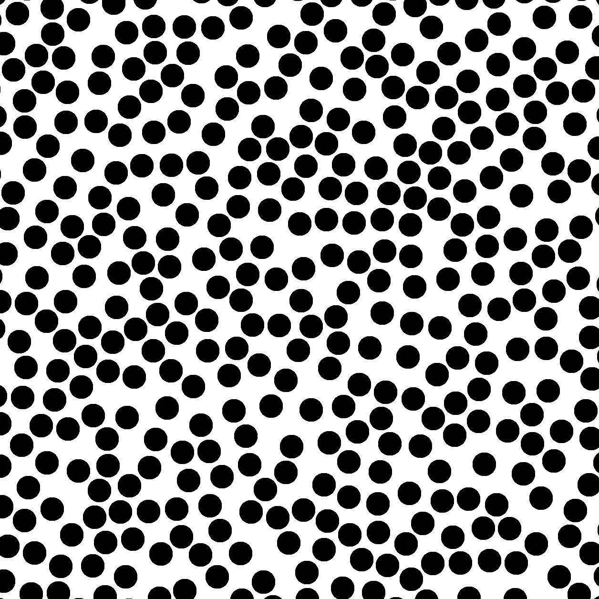
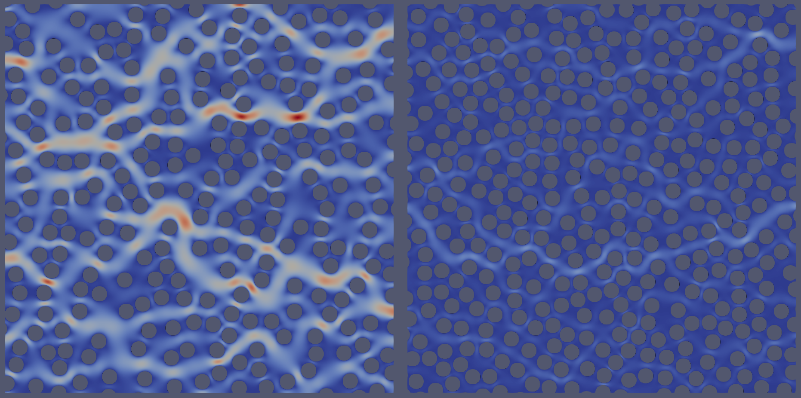

Exercise - Permeability of randomly packed disks
Background
The permeability of natural rocks is a complex function of pore geometry, grain size, and arrangement. As we have learned in the previous exercise, this pore geometry can be inferred from cT-scanned images of rock samples and many examples can be found in the literature and the digital porous media portal.
In this exercise, we will explore the permeability of a synthetic rock sample consisting of randomly packed disks. The goal is to understand how the permeability changes with porosity and how flow self-organizations into dominant preferential flow paths.
The problem of how densely disks and spheres can be packed is a well-studied problem in physics and mathematics. The maximum packing density of disks in 2D is about 0.91, while for spheres in 3D it is about 0.74. The 3D problem is known as the Kepler conjecture, which states that the densest packing of spheres is achieved by stacking them in a face-centered cubic lattice arrangement. However, in practice, natural rocks often have lower packing densities due to irregularities and imperfections in the grain shapes and arrangements. The 2D was studied by Joseph Louis Lagrange, who proved in 1773 that the densest packing of disks is achieved by a hexagonal arrangement.
We want to explore cases, where the disks are randomly packed but are not touching each other, to ensure that we have connected pore space and a well-defined mesh. As a consequence, the minimum porosity will be higher than in the maximum packing density case and we will only be able study porosities of approximately 60% and higher.
Random disk packing
We will again use porespy to generate a random packing of disks. Here is a simple script that generates a random packing of disks with a specified porosity:
import porespy as ps
import matplotlib.pyplot as plt
import numpy as np
from PIL import Image
import os
# 1. create a random sphere model using porespy
# show working directory
print(f"Current working directory: {os.getcwd()}")
shape = [1256, 1256] # size of the image in pixels
volume_fraction = 1 # approximately 1-porosity depending on radius and the boundary conditions
edges = 'extended' # 'extended' means that the spheres can extend beyond the image boundaries
clearance = 10 # minimum distance between spheres in pixels
r = 25 # radius of the spheres in same units as the image
# 2. generate the spheres and show / ~ to stay with earlier convention that black is solid
im = ~ps.generators.random_spheres(im_or_shape=shape, r=r, clearance=clearance, volume_fraction=volume_fraction, edges=edges)
fig, ax = plt.subplots(1, 1, figsize=[4, 4])
ax.axis(False) # turn off decoration
ax.imshow(im, origin='lower', interpolation='none', cmap='gray');
# sum pixel>1/total pixels
print(f"Porosity: {np.sum(im > 0) / np.prod(shape):.3f}")
# 3. save as vti (VTK's image format)
arr = np.asarray(im, dtype=int)*255 # convert to int and scale to 0-255 for VTK
arr_stacked = np.stack((arr,arr), axis=2)
print('Saving as vti...')
ps.io.to_vtk(arr_stacked, 'porous_model_spheres')
print('Saving as png...')
im_pil = Image.fromarray(arr.astype(np.uint8)) # convert to PIL image
im_pil.save('porous_model_spheres.png')
The above script can be used as a starting point to generate images of randomly packed spheres (fig:exercise_randomdisk_geometry_fig).

Example output of random sphere packing with porespy.
Exercise
Play with the model parameters to generate different porosities and packing densities.
What happens if you increase the radius of the disks?
What happens if you increase the clearance?
What happens if you decrease the volume fraction?
What is the minimum porosity you can achieve with this method?
Generate model input
The workflow to generate the model input is the same as in the previous exercise:
Use paraview to segment the image file (vti) and generate triangulated stl file of the grains
Use the blockMesh utility to generate the underlying regular mesh
Run the snappyHexMesh utility to generate a mesh from the triangulated stl file
Remember to set locationInMesh to a point inside the pores space in system/snappyHexMeshDict`
Scale the mesh by a factor of 1e-6
Calculate the flow field using the simpleFoam solver
Post-process the results to compute the permeability and visualize the flow field
You can download an example case from here: here. The scripts to generate the model input at in geometry and python directories.
Exercise
Use the porespy package different disk packings and porosities.
Explore how porosity and permeability is related

Example calculations for different disk packings. Notice how flow organizes into dominant flow paths.